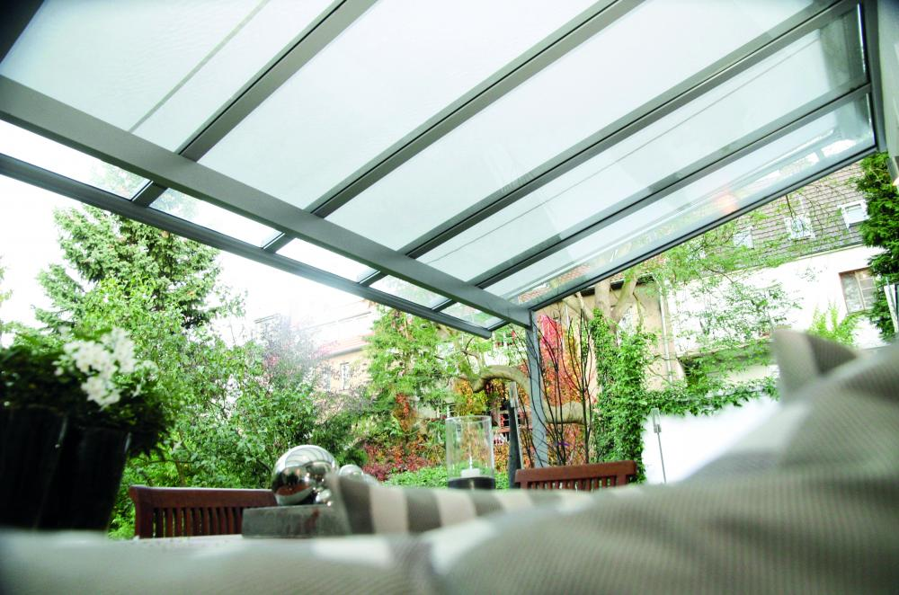

Cartesian
Grafický dizajn drevenej pergoly, ktorá spája úžitkové vlastnosti s architektonickým výrazom.
V pergolách Ambisio sa spája unikátny dizajn s maximálnou funkčnosťou. Vyrábame hliníkové, drevené a kombinované pergoly s integrovaným odtokovým systémom.
Grafický dizajn drevenej pergoly, ktorá spája úžitkové vlastnosti s architektonickým výrazom.

Drevená pergola s urbanistickým dizajnom, ktorá zapadá aj do náročného mestského prostredia.

Minimalistická hliníková pergola s plochou strechou a čistými líniami bez viditeľných spojov.

Atribúty pergoly s dizajnovým doplnkom — integrovaným LED osvetlením a skrytým odvodnením.

Pergoly Renson® s otočnými lamelami, ktoré regulujú svetlo, tieň aj prúdenie vzduchu.

Ľahká konštrukcia so sťahovateľnou látkovou strechou — flexibilné tienenie terasy.